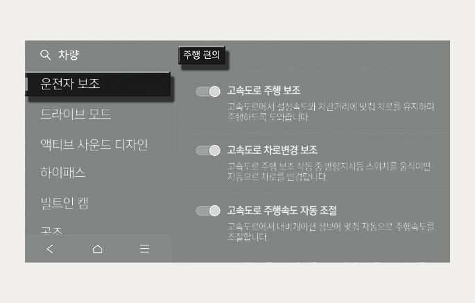

내비게이션 기반 스마트 크루즈 컨트롤 설정
고속도로 주행속도 자동 조절

2C_NSCCSettings
시동 'ON' 상태에서 인포테인먼트 시스템의 설정 > 차량 > 운전자 보조 > 주행 편의 > 고속도로 주행속도 자동 조절을 차례로 선택하십시오. 내비게이션 기반 스마트 크루즈 컨트롤이 켜집니다.
내비게이션 기반 스마트 크루즈 컨트롤에 이상이 발생한 경우 설정 메뉴에서 기능을 설정할 수 없습니다.

2C_NSCCSettings
시동 'ON' 상태에서 인포테인먼트 시스템의 설정 > 차량 > 운전자 보조 > 주행 편의 > 고속도로 주행속도 자동 조절을 차례로 선택하십시오. 내비게이션 기반 스마트 크루즈 컨트롤이 켜집니다.
내비게이션 기반 스마트 크루즈 컨트롤에 이상이 발생한 경우 설정 메뉴에서 기능을 설정할 수 없습니다.